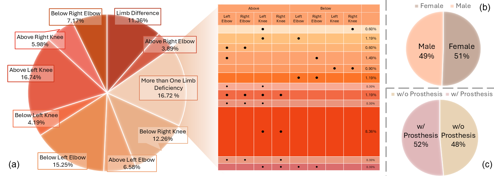

Overview
The InclusiveVidPose dataset contains a diverse collection of video sequences featuring individuals with various types of limb deficiencies. Below are the key statistics of our dataset.
313
Videos
398
Unique Individuals
327,235
Frames Annotated
308,533
Poses Annotated
Demographic Distribution

Figure 1: Overview of Participant Distribution by Deficiency Type, Gender, and Prosthesis. (a) Distribution of limb-deficiency types, with single-site deficiencies and multi-site cases. (b) Gender Distribution. (c) Distribution of individuals with and without prosthetic limbs.
Limb Deficiency Types
| Type | Count | Percentage |
|---|---|---|
| Upper Limb Amputation | ||
| Lower Limb Amputation | ||
| Congenital Limb Difference | ||
| Multiple Limb Differences |
Activity Distribution

Figure 2: Distribution of different activities in the dataset
Dataset Splits
| Split | Videos | Frames |
|---|---|---|
| Training | ||
| Validation | ||
| Testing |
Annotation Statistics
- Average number of keypoints per frame:
- Total annotated instances:
- Average annotation time per video:
- Inter-annotator agreement: